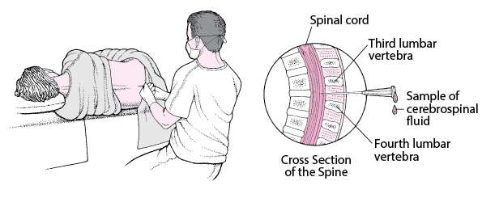
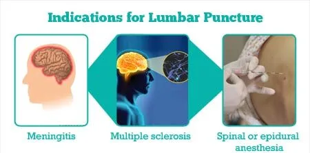
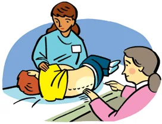

Expanded Nursing Uganda Explanation
Lumbar Puncture should be understood beyond a short definition. Link the concept to patient history, focused assessment, common risks, nursing priorities, documentation and evaluation of outcomes.
01 LUMBAR PUNCTURE(Spinal Tap)
Lumbar puncture is a sterile procedure in which a spinal needle is inserted, between the third and fourth lumbar vertebrae in the lower spine at the subarachnoid space i.e. the space between the spinal cord and its covering, the meninges to obtain samples of cerebrospinal fluid (CSF) for qualitative analysis.
The site of the puncture can be between the 3rd and 4th or 4th and 5th Lumbar vertebrae where there is no danger of damaging the spinal cord.
02 Indications of Lumbar puncture
1. Measure cerebrospinal fluid (CSF) pressure : Increased pressure within the skull, known as intracranial pressure, can be a sign of various conditions. A lumbar puncture can measure CSF pressure and assess for potential complications.
2. Assist in the diagnosis of suspected CNS infections : This includes:
- Bacterial or viral meningitis : Inflammation of the meninges, the membranes surrounding the brain and spinal cord.
- Meningoencephalitis : Inflammation of both the meninges and the brain.
- Intracranial or subarachnoid hemorrhage : Bleeding within the skull or the space between the brain and the meninges.
- Some malignant disorders: Cancerous conditions affecting the central nervous system (CNS).
3. Evaluate and diagnose demyelinating or inflammatory CNS processes: This includes:
- Diagnosis of Multiple Sclerosis (MS) : MS is an autoimmune disease that affects the central nervous system. CSF analysis can detect oligoclonal bands, which are characteristic of MS.
- Guillain-Barré Syndrome (GBS) : An autoimmune disorder affecting the peripheral nervous system, leading to muscle weakness and paralysis. A lumbar puncture can reveal elevated protein levels in the CSF.
- Acute Disseminated Encephalomyelitis (ADEM) : A rare inflammatory disease of the brain and spinal cord.
4. Infuse medications : This includes:
- Spinal anesthesia before surgery : Numbing the nerves in the spinal canal to provide pain relief during surgery.
- Contrast material for diagnostic imaging : This includes:
- Inject dye (myelography) : Visualize the spinal canal and nerves.
- Radioactive substances (cisternography) : Evaluate the flow of CSF.
- Chemotherapy drugs directly into the spinal canal : Treat certain types of cancer affecting the CNS.
5. Treat normal pressure hydrocephalus : A condition where excess CSF accumulates in the brain, leading to symptoms like walking difficulties and cognitive decline.
6. Treat cerebrospinal fistulas : Abnormal connections between the CSF space and other parts of the body.
7. Treat idiopathic intracranial hypertension (IIH) : A condition of increased pressure within the skull with no clear cause.
8. Placement of a lumbar CSF drainage catheter : A thin tube inserted into the spinal canal to drain excess CSF.
03 Contraindications
- Space occupying lesion : A computerized tomography (CT) scan or MRI prior to a lumbar puncture can be obtained to determine if there is evidence of a space-occupying lesion that results in increased intracranial pressure.
- Severe coagulopathy or bleeding disorders: Due to the significant risk of epidural hematoma formation.
- Severe degenerative vertebral joint disease : There will be difficulty in passing the needle through the degenerative arthritic inter-spinal space like in Spinal stenosis.
- Severe spinal deformities : Patients with severe spinal deformities, such as scoliosis, may have an increased risk of complications.
- Skin infection near the puncture site : The presence of skin infection near the site of the lumbar puncture increases the risk of contamination of infected material into the CSF.
- Increased intracranial pressure due to a brain tumor : Cerebral or cerebellar herniation with severe neurological deterioration may occur after the withdrawal of CSF fluid.
- Patient refusal : Ultimately, the decision to undergo a lumbar puncture is the patient’s choice. If a patient refuses the procedure, their wishes must be respected.
Equipment for Lumbar Puncture
- Top shelf Bottom shelf Bed side
- Sterile lumbar puncture pack containing: – 3 Gallipots – 2 Sterile drapes – Sterile towel – Cotton and gauze swabs – Receivers – Receiver containing sponge holding forceps, dissecting and artery forceps. – 2 spinal needles. – A pair of sponge holding forceps – A pair of sterile gloves. – Masks Gallipots are for; > Gallipot for antiseptic lotion > Gallipot for sterile cotton swabs > Gallipot for sterile gauze swabs. A tray containing: – Two 10 ml sterile syringes with needles – Two 2 ml sterile syringes with needles – Two pairs of sterile gloves – Two lumbar puncture needles – Lignocaine 2% – Antiseptic solution like Iodine, methylated spirit or alcohol. – At least 3 specimen bottles – Dressing mackintosh and towel – Adhesive tape/colloid – 2 drums of gauze dressings and swabs – Emergency tray – Spinal manometer – Laboratory request forms – Emergency tray – Cheatle forceps – Hand washing equipment – Screen – Safety box – Bedpan and urinal – A good source of light at the bedside
04 Procedure for Lumber Puncture
- Steps Action Rationale
- 1. Follow the general rules.
- 2. Offer a bedpan to the patient. To promote comfort.
- 3. Position the patient in any of the following positions: i. The patient may sit up on the stool and bend forward with the head between the knees ii. The patient may lie in a lateral position with the buttocks close to the edge of the bed; the knees and hip fully flexed drawn towards the chin, one pillow is placed under the head. A fracture board is provided. A flexed position increases the space between the vertebrae. A hard surface prevents sagging in the bed and interference with the procedure.
- 4. Encourage the patient to remain in a flexed position until the procedure is completed. Prevent risk of trauma.
- 5. Leave the patient covered and expose only the lumbar region. To provide privacy.
- 6. Provide good light at the lumbar region. To see the right site clearly.
- 7. Assemble the requirements for the top shelf of the trolley. Promote easy access.
- 8. Pour antiseptic lotion into one of the gallipots and the doctor cleanses the puncture site then drapes the area. For infection prevention and control
- 9. Wash hands, dry and put on gloves. To maintain sterility
- 10. Assist the doctor in cleaning the lumbar region, giving local anaesthesia and in performing the lumbar puncture in between the 3rd and 4th or 4th and 5th lumbar vertebrae. Promote success of the procedure and prevent injury to the spinal cord.
- 11. Unscrew the specimen bottles and place them about 1 cm below the needle to receive the cerebral spinal fluid. To avoid contamination.
- 12. Reassure the patient and observe the condition, colour, pulse and respiration rate, and report any changes or complaints. To detect complications on time.
- 13. Label the specimen, and take them to the laboratory with a laboratory request form. For diagnosis of causative organisms.
- 14. Assist the doctor to seal the puncture site with tincture benzoin or collodion and apply the dressing. To prevent leakage of CCF
- 15. Instruct the patient to stay confined to bed in a flat position and to be moved only if necessary for at least 12 hours. To avoid complications like severe headache and backache.
- 16 The used equipment is cleared away. To promote ward maintenance,
- 17 Monitor patient’s condition for ¼ , ½ 1, 2 and 4 hourly for 24 hrs depending on the patient’s condition. To detect complications and manage appropriately.
- 18 Clear away the trolley and wash hands. To prevent the spread of infections.
- 19 Document the procedure. To promote follow up.
Points To remember:
- A manometer is given to the Doctor to measure CCF when required.
- Extreme care is taken to ensure aseptic technique throughout the procedure.
- Encourage the patient to remain in a flat position in bed for 24 hours.
05 Nurses Roles in Lumbar Puncture
Before the Procedure
- Explain the procedure to the patient : Inform the patient about the purpose of the lumbar puncture, the procedure details, where it will be done, and who will perform it.
- Obtain informed consent : Ensure the patient signs a consent form if required by the institution.
- Reinforce diet: Advise the patient that fasting is not required.
- Promote comfort : Instruct the patient to empty the bladder and bowel before the procedure.
- Establish baseline assessment data : Perform vital signs monitoring and a neurologic assessment of the legs, including movement, strength, and sensation.
- Position the client : Assist the client to assume a lateral decubitus (fetal) position near the side of the bed with the neck, hips, and knees drawn up to the chest. Alternatively, have the patient sit on the edge of the bed while leaning over a bedside table.
- Instruct to remain still : Emphasize that the patient must lie very still throughout the procedure to prevent traumatic injury.
During the Procedure
- Arrange the equipment for use as per the doctor’s convenience .
- Protect the bed : Use a mackintosh and draw sheet.
- Position the patient for easy access .
- Provide a stool for the doctor to sit on during the procedure .
- Expose the site to be punctured .
- Help monitor the patient’s condition .
- Maintain the patient’s position .
- Reassure the patient to stay calm during the procedure .
After the Procedure
- Apply brief pressure to the puncture site : To avoid bleeding, apply pressure and cover the site with a small occlusive dressing or band-aid.
- Place the patient flat on the bed: The patient should remain flat for 4 to 6 hours, as instructed by the physician, and may turn from side to side without elevating the head.
- Monitor vital signs, neurologic status, and intake and output: Assess these every 4 hours for 24 hours to evaluate the patient’s condition.
- Monitor the puncture site : Watch for signs of CSF leakage and drainage of blood, including positional headaches, nausea, vomiting, neck stiffness, photophobia, imbalance, tinnitus, and phonophobia.
- Encourage increased fluid intake : Advise the patient to drink up to 3,000 ml of fluids in 24 hours to replace the CSF removed during the lumbar puncture.
- Label and number the specimen tube correctly : Ensure all samples are properly labeled and sent to the laboratory immediately for evaluation.
- Administer analgesia as ordered: Provide pain relief for headaches that may occur after the procedure.
06 Normal Results of Lumbar Puncture
- Pressure : 70 to 180 mm H2O.
- Appearance : CSF is normally clear and colorless.
- CSF total protein : 15-45 mg/dL.
- Gamma globulin : 3 to 12% of the total protein.
- CSF glucose : 50 to 80 mg/dL.
- CSF cell count : No red blood cells (RBCs); 0-5 white blood cells (WBCs) per microliter, all mononuclear.
- CSF chloride : 118 to 130 mEq/L.
07 Complications of Lumbar Puncture
The lumbar puncture procedure must be performed with extreme care and aseptic technique to avoid complications such as:
- Headache : Commonly due to leakage of cerebrospinal fluid (CSF) into nearby tissues, affecting around 25% of patients.
- Meningitis : Infection of the protective membranes covering the brain and spinal cord.
- Bleeding into the Spinal Canal : Hemorrhage that may cause nerve damage or other complications.
- Sudden Death: Rare but severe complication, often due to increased intracranial pressure.
- Medullary Compression : Pressure on the spinal cord, which can lead to neurological issues.
- Edema or Hematoma at the Puncture Site : Swelling or blood collection at the puncture site.
- CSF Leakage: Leakage through the dural defect after needle withdrawal.
- Reaction to Anesthesia: Adverse effects due to the anesthesia used during the procedure.
- Epidural or Subdural Abscess : Infection in the space around the spinal cord.
- Transient Difficulty in Voiding : Temporary difficulty in urination post-procedure.
- Transillar Herniation : Displacement of brain tissue due to pressure changes.
- Local Pain : Caused by nerve root irritation during the procedure.
- Post-Lumbar Puncture Headache : Occurs in about 25% of patients due to CSF leakage.
- Back Discomfort or Pain : Pain at the site of the puncture.
- Brainstem Herniation : Caused by increased intracranial pressure due to conditions like brain tumors.
Prevention of Post-Lumbar Puncture Headache
To prevent post-lumbar puncture headache, consider the following measures:
- Avoid Strong Light: Keep the room darkened to reduce discomfort.
- Hydration : Encourage the patient to drink plenty of fluids to stabilize CSF levels.
- Analgesics : Provide pain relief medication as prescribed.
- Foot of the Bed Raised (Trendelenburg Position ) : Elevate the foot of the bed to reduce CSF leakage and pressure on the puncture site.
08 Nursing Uganda Clinical Lens
Use Lumbar Puncture as a practical nursing topic, not only a memorized definition. Turn the topic into practical nursing knowledge: meaning, assessment, care priorities, teaching and evaluation.
- What to understand first: define lumbar puncture, identify the normal or expected pattern, then explain what changes when the patient is unwell.
- Why it matters in care: the nurse must recognize risk early, explain findings clearly, document accurately and know when to escalate.
- How to revise it: connect each point to assessment, nursing diagnosis or care problem, intervention, rationale and evaluation.
09 Assessment Guide
- Key definitions, patient history, focused observations and risk factors.
- Findings that are normal, abnormal or urgent.
- Resources, referral needs and documentation requirements.
10 Nursing Priorities, Rationales and Outcomes
- Protect safety, comfort, dignity and infection prevention.
- Provide clear care, education and escalation when needed.
- Evaluate response and record what changed.
The rationale for these priorities is patient safety: nursing actions should prevent deterioration, reduce discomfort, support recovery and create clear evidence for the next caregiver.
- Expected outcome: The topic is understood in a way that supports safe nursing judgement and revision.
11 Patient Teaching and Revision Check
- Explain lumbar puncture in simple language the patient or caregiver can repeat back.
- Teach warning signs, medicine or follow-up instructions, hygiene or lifestyle points where relevant.
- For exams, prepare a short answer using: definition, causes or risk factors, signs, assessment, management, complications and prevention.
- For ward practice, document baseline findings, actions taken, patient response and the plan for review.
Illustrations and Diagrams (9)





1 more diagram available — open the lesson for full illustrations.
Related Video Lectures
Watch nursing lecture videos on YouTube for this topic. Opens in a new tab.
Watch on YouTubeExternal link: YouTube may use its own cookies and terms. Nursing Uganda is not affiliated with YouTube.